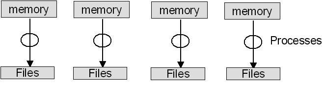
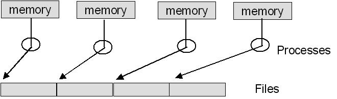

hyPACK-2013 Mode 1 : Software Threading : I/O Perf. Issues
The I/O on multi-core processors or cluster of Multi Processors
play an important role to understand and enhance the performance of your application.
Large-scale scientific or engineering computations often require larger memory space.
In fact, many applications of parallel computes are memory-bound rather than CPU-bound
or I/O bound. This is especially true in multi computer system using distributed
memory. The local memory attached to each node is relatively small. Therefore, each
node can handle only a small problem. In typical large-scale parallel and Cluster
platforms, a system bus provides slots to connect I/O devices, such as disk, drives,
tape drives, and network interfaces cards. Efforts were made in both software
development and hardware design to improve the I/O bandwidth between computational
units and storage systems. Although most of these works only consider exclusive
file access
among the concurrent I/O requests, more scientific applications require data
partitioning with overlap among the requesting processes.
|
List of MPI IO & IO Threaded Programs
Example 1.1
|
Write a simple MPI I/O program performing sequential I/O to multiple files
|
Example 1.2
|
Write a Pthread I/O program performing each thread writing to seperate file
( Assignment )
|
Example 1.3
|
Write an MPI program performing MPI I/O to separate files (Using MPI 2.0)
|
Example 1.4
|
Write an MPI program performing MPI I/O to single file (Using MPI 2.0)
|
Example 1.5
|
Write an Pthread I/O program reading the file with different number of threads.
( Assignment )
|
Example 1.6
|
Write a MPI I/O program to read the file with different number of processes. (Using MPI 2.0)
|
|
Introduction to I/O : Threads
|
|
In Multi Core programming environment, within the same time interval, there may be
multiple processes active competing for memory, I/O and CPU resources. Several
applications are CPU-bound (computation intensive) and some of I/O bound
(input-output intensive). The execution of various types of programs in
the Multi-Core System to balance bandwidth among various function units i
s a challenging task. The program interleaving is intended to promote better
resource utilization through overlapping I/O and CPU operations on multiple
cores. For example, whenever a thread P1 is tied up with I/O operations,
the OS scheduler can switch the CPU to thread P2. This allows simultaneous
the simultaneous execution of several programs in the system. When P2 is
done, the CPU can be switched to P3. Note the Overlapped I/O and CPU
operations and the CPU wait time are greatly reduced. The performance of system
can be limited by computer-bound jobs or input-output (I/O) bound jobs. Various
techniques are used to manage I/O data transfer. Techniques used to achieve maximum
concurrency of I/O and CPU processing is an important in the Multi-core programming
environment.
In Multi-core environment, too many threads can seriously degrade program performance
and the issues of cache, virtual memory, thread locks, and time slicing play a key role
for performance degradation. In some situations, all the threads waiting for the lock
mus know wait for the holding thread to wake up and release the lock. These problems
are addressed and the best approach is to limit the the number of runnable
threads to the hardware threads, and possibly limit the number of outer level cached
in typical multi-socket multi-core systems.
When a thread is blocked waiting for an external event, such as disk I/O request,
the OS takes it off the round-robin schedule. Here, a blocked thread does not cause
time-slicing overhead and a program may have more software threads than hardware threads,
and still run efficiently if most of the OS threads are blocked. The concept of
compute threads & I/O threads may help to reduce the overheads. Special care is
needed to ensure that the compute threads should match the processor resources.
Compute threads should be the threads that are runnable most of the time. Ideally,
the compute threads should be the threads never block an external events, instead
feed from task queues that provide work. The I/O threads are threads that wait on
external events most of the time, and thus do not contribute to having too many
threads. Too many threads can degrade program performance and the impact comes in
two ways. First partitioning a fixed amount of work among too many threads and this
may give too little work for each thread. This leads to overhead of starting and
terminating threads swamps the useful work. Second, having too many concurrent
software threads incurs overheads from having to share fixed hardware resources.
Much attention has been paid on the implementation issues for concurrent overlapping
I/O operations that abide by the atomicity semantics of the Message Passing Interface
(MPI) standard. The atomicity refers as a synchronization operation and
it is a process often needs to perform a sequence of operations as a single atomic
operation. An atomic operation is one that is indivisible (Once it starts,
it cannot be interrupted in the middle, meaning other processes cannot see an
intermediate state.) and finite (once it starts, it will finish in a finite
amount of time). A synchronization operation causes processes to wait for
one another, or allows processes that are waiting to resume execution.
On Multi-Cores, use of Portable Operating System Interface (POSIX) at
granularity level address the concurrent overlapping I/O. The POSIX
definition considers atomicity at the granularity of read () /write ()
calls in which only a contiguous file space can be specified in a single I/O request
file regions.
|
|
Multi-Cores : Concurrent Overlapping - POSIX Threads
|
The concurrent overlapping I/O occurs when I/O requests from multiple processes
are issued simultaneously to the file system and overlaps exist among the file regions
accessed by these requests. If all requests are read requests, the file system can
use the disk cache to duplicate the overlapped data for the requesting processes and
no conflict will exist when obtaining file data among the processes. However,
when one or more I/O requests are write requests, the outcome of the overlapped
regions, either in the file or process's memory, can vary depending on the
implementation of the file system. This problem is commonly referred to as
I/O atomicity. The POSIX defines atomicity such that all the byte from a
single file I/O request that start out together end-up together, without
interleaving from other I/O requests.
The POSIX definition can be simply interpreted as that either all or none of the data
written by a process is visible to other processes. The on-visibility of data to other
processes can occur when the write data is cached in a system buffer and has not been
flushed to the disk or the data is flushed but overwritten by other processes. Hence,
when POSIX semantics are applied to the concurrent I/O operations, resulting data
in the overlapped regions in the disk shall consist of data from only one of the
write requests. The POSIX read and write calls share a common characteristics such
as one I/O request can only access a contiguous file region specified by a file
pointer and the amount of data starting from the pointer. Therefore, the overlapped
data written by two or more POSIX I/O calls can only be a contiguous region in the
file. Many POSIX file systems implement the atomic I/O by serializing the process of
requests such that the overlapped regions can only be accessed by one process at any
moment.
Programs having the following characteristics may be well suited for pthreads:
Work that can be executed, or data that can be operated on, by multiple tasks simultaneously
Block for potentially long I/O waits
Use many CPU cycles in some places but not others
Must respond to asynchronous events
Some work is more important than other work (priority interrupts)
Pthreads can also be used for serial applications, to emulate parallel execution. A perfect example is the typical web browser,
which for most people, runs on a single cpu desktop/laptop machine.
In many applications,
a data structure is read frequently but written infrequently. For such scenarios, it is useful
to note that multiple reads can proceed without any coherence problems. However, writes
must be serialized. This points to an alternate structure called a read-write lock.
A thread reading a shared data item acquires a read lock on the variable. A read lock is
granted when there are other threads that may already have read locks.
If there is a write lock on the data (or if there are queued write write locks), the
thread performs a condition wait. Using this principle, the authors designed function
read locks mylib_rwlock_unlock , write locks mylib_rwlock_wlock
and unlocking mylib_rwlock_unlock .
|
|
Multi Cores - MPI 1.X : Non Parallel I/O
|
In the past, MPI applications
developed using I/O rely on the features
provided by the underlying operating system, typically Unix.
MPI-l does not have any explicit support for parallel I/O.
A simple way of doing parallel I/O in MPI is let one process do all I/O. Figure 1.1
describes typical situation where sequential I/O from a parallel program is
discussed.
|
MPI 1.X : Non Parallel I/O from an MPI Program
|
|
In the past, MPI applications
developed using I/O rely on the features
provided by the underlying operating system, typically Unix.
MPI-l does not have any explicit support for parallel I/O.
A simple way of doing parallel I/O in MPI is let one process do all I/O. Figure 1.1
describes typical situation where sequential I/O from a parallel program is
discussed.
A simple example code 1.1 is written below in which the set of processes have a distributed array of
integers to be written to a file.

Figure 1.1 Sequential I/O from a parallel program
For simplicity, we assume that each process has 100
integers of the array, whose total length thus depends on how many processes there are.
In the figure, the circles represent processes; the upper rectangles represent the block
of 100 integers in each process's memory; and the lower rectangle represents the file
to be written. The program begins with each process initializing its portion of the array.
All processes but process a send their section to process 0. Process a first writes its
own section and then receives the contributions from the other processes in turn (the rank
is specified in MPI_Recv) and writes them to the file. This is often the first way I/O
is done in a parallel program that has been converted from a sequential
program, since no changes are made to the I/O part of the program. There are a number
of other reasons why I/O in a parallel program may be done this way.
|
|
|

|
The parallel machine on which the program is running may support I/O
only
from one process.
| sk queues that provide work. The I/O threads are threads that wait on
external eve
|
One can use sophisticated I/O libraries, perhaps written as part of
a high-level data-management layer, that do not have parallel I/O capability.
|

|
The resulting single file is convenient for handling outside
the program
(by mv, cp, or ftp, for example).
|

|
Performance may be enhanced because the process doing the I/O may be
able
to assemble large blocks of data
|

|
The lack of parallelism limits performance and scalability, particularly if the
underlying file system permits parallel physical I/O.
|
|
/* Example of sequential Unix write into a common file */
#include "mpi.h"
#include
#define BUFSIZE 100
int main (int argc, char *argv [])
{
int i, myrank, numprocs, buf [BUFSIZE];
MPI_Status status;
FILE *myfile;
MPI_Init (&argc, &argv);
MPI_Comm_rank(MPI_COMM_WORLD, &myrank);
MPI_Comm_size (MPI_COMM_WORLD, &numprocs);
for (i=0; i < BUFSIZE; i++)
buf [i] = myrank * BUFSIZE + i;
if (myrank != 0)
MPI_Send(buf, BUFSIZE, MPI_INT, 0, 99, MPI_COMM_WORLD);
else
{
myfile = fopen ("testfile", "w");
fwrite(buf, sizeof(int), BUFSIZE, myfile);
for (i=; i < numprocs; i++)
{
MPI_Recv(buf,BUFSIZE,MPI_INT,i,99,MPI_COMM_WORLD,&status);
fwrite(buf, sizeof(int), BUFSIZE, myfile);
}
fclose(myfile);
}
MPI_Finalize();
return 0;
}
Example 1.1 Code for Sequential I/O from a parallel program
|
|
MPI 1.x : Non-MPI Parallel I/O
|
|
The example 1.1 does not address the parallelism, the next step in the migration of a sequential program to a parallel one is to have each process
write to a separate file, thus enabling parallel data transfer, as shown in Figure 1.2. Here each process functions completely independently of the others with respect
to I/O. Thus, each program is sequential with respect to I/O and can use language
I/O. Each process opens its own file, writes to it, and closes it. We have ensured
that the files are separate by appending each process's rank to the name of
its output file.

Figure 1.2 Non-MPI I/O to multiple files in a parallel program
The advantage of this approach is that the I/O operations can now take place
in parallel and can still use sequential I/O libraries if that is desirable.
The program is explained in Example 1.2.
The primary disadvantage is that the result of running the program is a set of
files instead of a single file. This has multiple disadvantages:
|
|
|
|
The files may have to be joined together before being used as input to
another application.
|
|
It may be required that the application that reads these files be
a parallel program itself and be started with the exact same
number of processes.
|
|
It may be difficult to keep track of this set of files as a group,
for moving them, copying them, or sending them across a network.
|
|
/* Example of parallel Unix write into a separate files */
#include "mpi.h"
#include
#define BUFSIZE 100
int main (int argc, char *argv [])
{
int i, myrank, numprocs, buf [BUFSIZE];
char *filename[128];
FILE *myfile;
MPI_Init (&argc, &argv);
MPI_Comm_rank(MPI_COMM_WORLD, &myrank);
MPI_Comm_size (MPI_COMM_WORLD, &numprocs);
for (i=0; i < BUFSIZE; i++)
buf [i] = myrank * BUFSIZE + i;
sprintf(filename, "testfile.%d", myrank);
myfile = fopen(filename, "w");
fwrite(buf, sizeof(int), BUFSIZE, myfile);
fclose(myfile);
MPI_Finalize();
return 0;
}
Example 1.2 Code for Non-MPI Parallel I/O to multiple files
|
|
The performance may also suffer because individual processes may find their
data to be in small contiguous chunks, causing many I/O operations with smaller
data items. This may hurt performance more than can be compensated for by the
parallelism.
|
|
MPI 2.X : MPI I/O to Separate files
|
MPI standard 2.0 defines new way of parallel I/O features and the
examples 1.1 & 1.2 can be re-written using MPI 2.0 library calls.That is
all the I/O operations can be done using MPI 2.0 library calls. A detailed
study is required to understand the overheads while we use MPI 2.0 library
calls. The following changes are required from program point of view and it
has advantages and disadvantages from performance point of view.
|
|
|
|
First, the declaration FILE has been replaced by MPI_File as the
type of myfile.
|
| |
Note that myfile is now a variable of type MPI_File,
rather than a pointer to an object of type FILE.
|
|
|
Second, the MPI function corresponding to fopen is called MPI_File_open.
|
| |
MPI_File_open(MPI_COMM_SELF,filename,MPI_MODE_CREATE | MPI_MODE_WRONGLY,
MPI_INFO_NULL, &myfile);
The first argument is a communicator. Files in MPI are opened by a
collection of processes identified by an MPI communicator.
This ensures that those processes operating on a file together know
which other processes are also operating on the file and can communicate
with one another. Here, since each process is opening its own file for
its own exclusive use, it uses the communicator MPI_COMM_SELF.
The second argument is a string representing the name of the file, as in
fopen. The third argument is the mode in which the file is opened. Here
it is being both created (or overwritten if it exists) and will only be written
to by this program. The constants MPI_MODE_CREATE and MP_MODE_WRONLY represent
bit flags that are or'd together in C, much as they are in the Unix system call
open. The fourth argument, MPI_INFO_NULL here, is a predefined constant
representing a dummy value for the info argument to MPI_File_open. As the
last argument, we pass the address of the MPI_File variable, which the
MPI_File_open will fill in for us. As with all MPI functions in C,
MPI_File_open returns as the value of the function a return code,
which we hope is MPI_SUCCESS. for simplicity.
|
|
The function,
which actually does the I/O in this program, is
MPI_File_write(myfile, buf, BUFSIZE, MPI_INT,MPI_STATUS_IGNORE);
| |
Here the way of describing a buffer to be written (or read) gives the advantages
as it does in message passing: it allows arbitrary distributions of noncontiguous
data in memory to be written with a single call, and it expresses the datatype,
rather than just the length, of the data to be written, so that meaningful
transformations can be done on it as it is read or written, for heterogeneous
environments. Here we just have a contiguous buffer of BUFSIZE integers,
starting at address buf. The final argument to MPI_File_write is a "status"
argument, of the same type as returned by MPI_Recv. MPI-2 specifies that the
special value MPI_STATUS_IGNORE can be passed to any MPI function in place of
a status argument, to tell the MPI implementation not to bother filling in
the status information because the user intends to ignore it. This technique
can slightly improve performance when status information is not needed.
|
|
|
Fourth, the MPI function corresponding to close is called
MPI_File_close(&myfile);
|
| |
The function MPI_File_close(&myfile);
closes the file. The address of myfile is passed rather than the
variable itself because the MPI implementation will replace its value
with the constant MPI_FILE_NULL. Thus the user can detect invalid file
objects.
|
|
|
/* Example of parallel MPI write into a separate files */
#include "mpi.h"
#include
#define BUFSIZE 100
int main (int argc, char *argv [])
{
int i, myrank, numprocs, buf [BUFSIZE];
char *filename[128];
FILE *myfile;
MPI_Init (&argc, &argv);
MPI_Comm_rank(MPI_COMM_WORLD, &myrank);
MPI_Comm_size (MPI_COMM_WORLD, &numprocs);
for (i=0; i < BUFSIZE; i++)
buf [i] = myrank * BUFSIZE + i;
sprintf(filename, "testfile.%d", myrank);
MPI_File_open(MPI_COMM_SELF, filename, MPI_MODE_WRONLY | MPI_MODE_CREATE,
MPI_INFO_NULL, &myfile);
MPI_File_write(myfile, buf, BUFSIZE, MPI_INT,
MPI_STATUS_IGNORE);
MPI_File_close(&myfile);
MPI_Finalize();
return 0;
}
Example 1.3 Code for MPI I/O to separate files in a parallel program
|
|
MPI 2.X : Parallel MPI I/O to a Single File
|
The processes share a single file instead of writing to separate files,
thus eliminating the disadvantages of having multiple files while retaining
the performance advantages of parallelism. We will still not be doing anything that absolutely cannot be done through language or library I/O on most file systems. The new version of the program is shown.
The first difference between this program and that of Figure 2.5 is in the
first argument of the MPI_File_open statement. Here we specify MPI_COMM_WDRLD
instead of MPI_COMM_SELF, to indicate that all the processes are opening a
single file together. This is a collective operation on the communicator,
so all participating processes must make the MPI_File_open call, although only a single file is being opened.
Our plan for the way this file will be written is to give each process access
to a part of it. The part of the file that is seen by a single process is
called the file view and is set for each process by a call to MPI_File_set_view.
The call looks like
MPI_File_set_view(thefile, myrank * BUFSIZE * sizeof(int),
MPI_INT, MPI_INT, "native", MPI_INFO_NULL);
The first argument identifies the file. The second argument is the displacement
(in bytes) into the file where the process's view of the file is to start.
Here we multiply the size of the data to be written (BUFSIZE * sizeof (int))
by the rank of the process, so that each process's view starts at the
appropriate place in the file. This argument is of a new type MPI_Offset,
which on systems that support large files can be expected to be a 64-bit
integer.
The next argument is called the etype of the view;
it specifies the unit of data in the file. Here it is MPI_INT,
since we will always be writing some number of MPI_INTs to this file.
The next argument, called the filetype, is a very flexible way of
describing noncontiguous views in the file. In our simple case here,
where there are no noncontiguous units to be written, we can just use
the etype, MPI_INT.
The next argument is a character string denoting the data representation to
be used in the file. The native representation specifies that data is
to be represented in the file exactly as it is in memory. The final
argument is an info object as in MPI-File_open. Here again it is to be
ignored, as dictated by specifying MPI_INFD_NULL for this argument.
Now that each process has its own view, the actual write operation
MPI_File_write(thefile, buf, BUFSIZE, MPI_INT,
MPI_STATUS_IGNDRE);
is exactly the same as in our previous version of this program.
But because the MPI_File_open specified MPI_COMM_WORLD in its communicator
argument, and the MPI_File_set_view gave each process a different view
of the file, the write operations proceed in parallel and all go into the
same file in the appropriate places.
|
|
/* Example of parallel MPI write into a separate files */
#include "mpi.h"
#include
#define BUFSIZE 100
int main (int argc, char *argv [])
{
int i, myrank, numprocs, buf [BUFSIZE];
char *filename[128];
MPI FILE thefile;
MPI_Init (&argc, &argv);
MPI_Comm_rank(MPI_COMM_WORLD, &myrank);
MPI_Comm_size (MPI_COMM_WORLD, &numprocs);
for (i=0; i < BUFSIZE; i++)
buf [i] = myrank * BUFSIZE + i;
sprintf(filename, "testfile.%d", myrank);
MPI_File_open(MPI_COMM_SELF, filename,
MPI_MODE_WRONLY | MPI_MODE_CREATE,
MPI_INFO_NULL, &myfile);
MPI_File_set_view(thefile, myrank * BUFSIZE * sizeof(int),
MPI_INT, MPI_INT, "native", MPI_INFO_NULL);
MPI_File_write(thefile, buf, BUFSIZE, MPI_INT,
MPI_STATUS_IGNORE);
MPI_File_close(&thefile);
MPI_Finalize();
return 0;
}
Example 1.4 Code for MPI I/O to single file in a parallel program
|
|
Compilation and Execution of I/O Threaded & MPI-2 I/O Programs
|
|
You should include pthread.h in the program and use linker flag -lpthread when linking.
The specific files to be used will differ with implementation on various platforms.
(A) Using command line arguments:
The compilation and execution details of Pthreads programs will vary from a system to another.
The essential steps are common to all the systems.
# cc -o -lpthread
For example to compile a simple Hello World program user can type
# cc Pthreads_HelloWorld.c -o Pthreads_HelloWorld -lpthread
(B) Using a Makefile:
For more control over the process of compiling and linking programs for Pthreads, you should use a 'Makefile'. You may also use some commands in Makefile particularly for programs contained in a large number of files. The user has to specify the names of the program and appropriate paths to link some of the libraries required for Pthreads programs in the Makefile
To compile and link a Pthreads program, you can use the command,
make
(C) Executing a Program:
To execute a Pthreads Program, type the name of the executable at command prompt.
Name of the Executable
For example, to execute a simple HelloWorld Program, user must type:
# HelloWorld
The output must look similar to the following:
Hello World!
|
|
Web sites : Multi Core / Parallel Computing |
| |
|